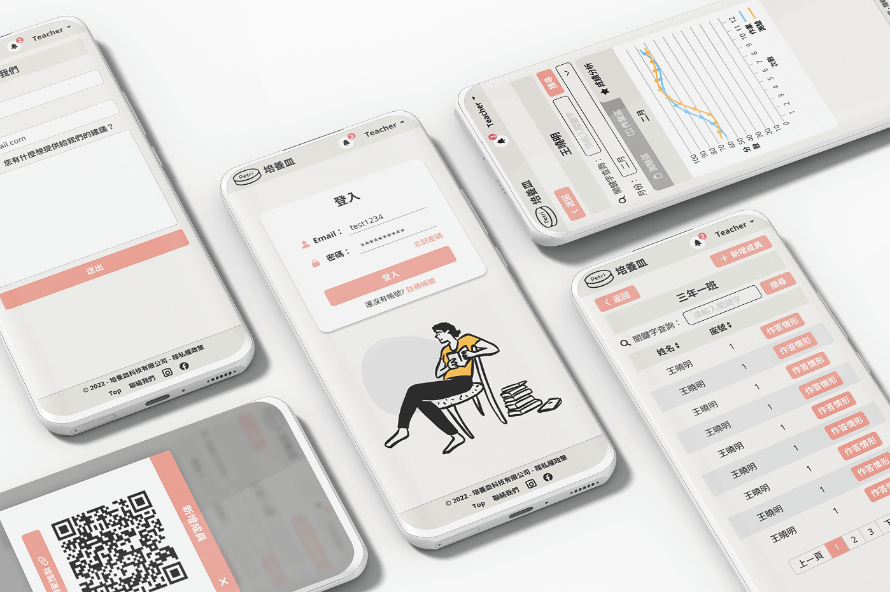

Petri培養皿｜線上學習平台
隨時隨地挑戰知識關卡，答題如玩遊戲般累積成長
#UI設計
#切版
#RWD
專案背景
Background
此專案需求來自教育端業主，希望打造一個整合學生端、老師端、後台的線上學習平台，提升學習動力、課堂互動，以及管理系統的效率。
角色定位

需求搜集
Requirements
由於此案為委託專案，需求主要透過 與委託方的會議討論 而來，並非直接從使用者研究取得。
在討論過程中，我將委託方的業務需求（如「提升學生學習動力」「老師能更快布置作業」「管理端可整合管理」）轉換為設計可落實的使用情境。
本專案並未進行完整的競品分析，原因在於系統功能範疇已由委託方明確規劃。
為了補足缺乏使用者研究的限制，我主要透過以下方式確認設計方向：
在討論過程中，我將委託方的業務需求（如「提升學生學習動力」「老師能更快布置作業」「管理端可整合管理」）轉換為設計可落實的使用情境。
本專案並未進行完整的競品分析，原因在於系統功能範疇已由委託方明確規劃。
為了補足缺乏使用者研究的限制，我主要透過以下方式確認設計方向：
1. 需求轉譯：將委託方的業務目標轉換為具體操作流程。
2. 情境模擬：假設不同角色（學生、老師、管理者）在日常情境下的操作需求，檢視設計合理性。
3. 經驗借鏡：參考以往專案經驗與部分線上學習平台案例，確保資訊架構與互動模式符合常見使用習慣。
2. 情境模擬：假設不同角色（學生、老師、管理者）在日常情境下的操作需求，檢視設計合理性。
3. 經驗借鏡：參考以往專案經驗與部分線上學習平台案例，確保資訊架構與互動模式符合常見使用習慣。
資訊架構 & 使用流程
IA & Flows
資訊架構規劃
1. 學生端：學習（我的學習/我的課程）、我的好友、問題註記、成就、獎勵（我的獎品、抽獎）、通知
2. 老師端：上課（派卷/課堂管理/匿名發問）、備課（班級列表/題目設定/獎品/課程/獎品設定/問題接收）、通知
3. 後台：使用者管理、訊息推播、管理聯絡我們。
2. 老師端：上課（派卷/課堂管理/匿名發問）、備課（班級列表/題目設定/獎品/課程/獎品設定/問題接收）、通知
3. 後台：使用者管理、訊息推播、管理聯絡我們。
使用流程範例
設計挑戰
Challenges
挑戰1：沒有實際使用者研究
→ 透過需求轉譯與情境模擬，確保功能符合學生與老師日常情境
挑戰2：如何提升學生學習動機
→ 遊戲化機制（徽章、金幣、抽獎）+ 同儕比較（好友徽章展示）
→ 抽獎小動畫：當學生使用測驗或作業獲得的貝殼進行抽獎時，會有小動畫呈現，增添趣味性與視覺回饋，提升整體使用體驗。
→ 抽獎小動畫：當學生使用測驗或作業獲得的貝殼進行抽獎時，會有小動畫呈現，增添趣味性與視覺回饋，提升整體使用體驗。
挑戰3：如何提升課堂互動
→ 設計「搶答遊戲」與「匿名發問」，提高學生專注力，降低學生被點名的焦慮感
成果亮點
Key Outcomes
抽獎小動畫
1. 設計目標：增加學生使用體驗的趣味性
2. 解決方案：在學生使用測驗或作業獲得的貝殼進行抽獎時，加入動畫效果
3. 效果：提升操作的視覺回饋與趣味性，使學生覺得操作更有趣

2. 解決方案：在學生使用測驗或作業獲得的貝殼進行抽獎時，加入動畫效果
3. 效果：提升操作的視覺回饋與趣味性，使學生覺得操作更有趣
遊戲化學習機制（徽章、金幣、任務獎勵）
1. 設計目標：激勵學生持續完成作業與測驗
2. 解決方案：完成作業、達成目標即可獲得徽章與金幣，並可在好友列表比對徽章
3. 效果：建立同儕間激勵與成就感，提高學生自我挑戰意願


2. 解決方案：完成作業、達成目標即可獲得徽章與金幣，並可在好友列表比對徽章
3. 效果：建立同儕間激勵與成就感，提高學生自我挑戰意願
搶答遊戲
1. 設計目標：提升課堂互動與專注度
2. 解決方案：老師可在課堂中隨機發起搶答，學生透過 QR code 進入搶答頁面，倒數計時並顯示結果
3. 效果：增加課堂趣味性，降低學生被點名焦慮
2. 解決方案：老師可在課堂中隨機發起搶答，學生透過 QR code 進入搶答頁面，倒數計時並顯示結果
3. 效果：增加課堂趣味性，降低學生被點名焦慮
匿名發問功能
1. 設計目標：鼓勵內向學生提出問題
2. 解決方案：學生可匿名發問，老師可集中查看並回覆
3. 效果：幫助老師了解學生困難，改善課程針對性
2. 解決方案：學生可匿名發問，老師可集中查看並回覆
3. 效果：幫助老師了解學生困難，改善課程針對性
資訊透明化與管理便利性（老師端 & 後台）
1. 設計目標：讓老師與管理者更高效掌控課堂與使用者狀態
2. 解決方案：派卷進度、作答情形、歷史成績圖表化呈現；後台統整使用者與訊息管理
3. 效果：降低行政負擔，提高整體運營效率
2. 解決方案：派卷進度、作答情形、歷史成績圖表化呈現；後台統整使用者與訊息管理
3. 效果：降低行政負擔，提高整體運營效率
